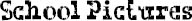

I DON’T THINK anyone will be shocked to learn I don’t want to have my school picture taken on October 22. No way. No thank you. I stopped letting anyone take pictures of me a while ago. I guess you could call it a phobia. No, actually, it’s not a phobia. It’s an “aversion,” which is a word I just learned in Mr. Browne’s class. I have an aversion to having my picture taken. There, I used it in a sentence.
I thought Mom would try to get me to drop my aversion to having my picture taken for school, but she didn’t. Unfortunately, while I managed to avoid having the portrait taken, I couldn’t get out of being part of the class picture. Ugh. The photographer looked like he’d just sucked on a lemon when he saw me. I’m sure he thought I ruined the picture. I was one of the ones in the front, sitting down. I didn’t smile, not that anyone could tell if I had.